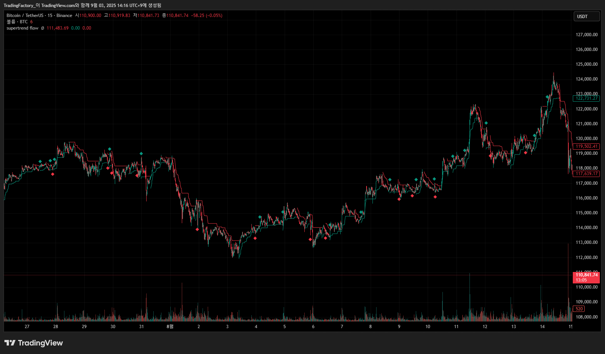

프로젝트 개요
이 프로젝트는 시장의 추세 방향을 나타내는 슈퍼트렌드 지표를 기반으로, 상승하는 저점(Higher Low)과 하락하는 고점(Lower High)과 같은 핵심 추세 반전 패턴을 포착하여 매수/매도 신호를 제공하는 지표입니다.
주요 기능
- 슈퍼트렌드 지표를 활용한 추세 방향 자동 감지
- 매수 신호: 추세 전환 시 '상승하는 저점(Higher Low)' 패턴 포착
- 매도 신호: 추세 전환 시 '하락하는 고점(Lower High)' 패턴 포착
- 매수 신호는 청록색, 매도 신호는 빨간색 다이아몬드로 표시
개발 과정
단순한 추세선 돌파 신호의 한계를 극복하기 위해 가격 움직임의 특성(Higher Low, Lower High)을 결합하여 신호의 신뢰도를 높였습니다. 이를 통해 불필요한 진입을 줄이고 더 정교한 매매 결정을 내릴 수 있도록 돕습니다.
미리보기
